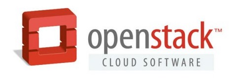
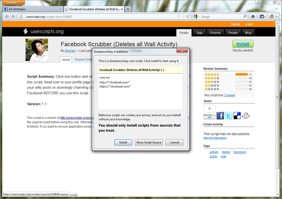
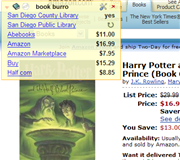
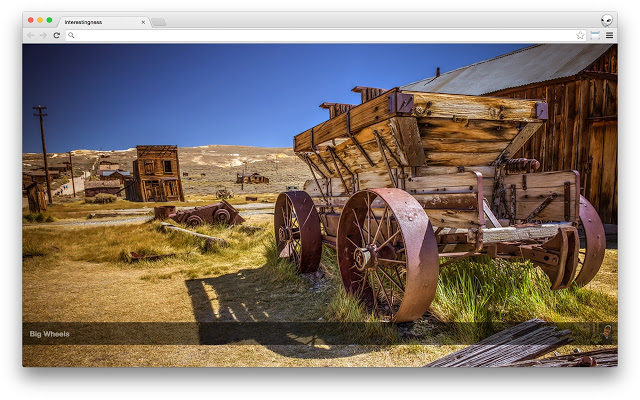
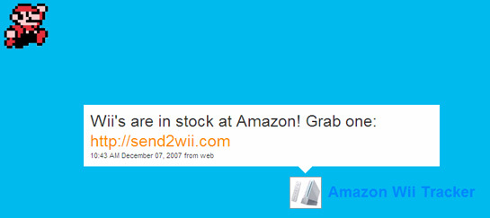
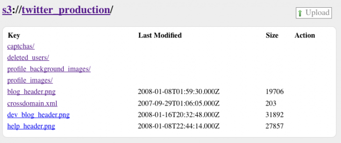
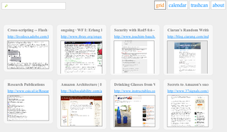
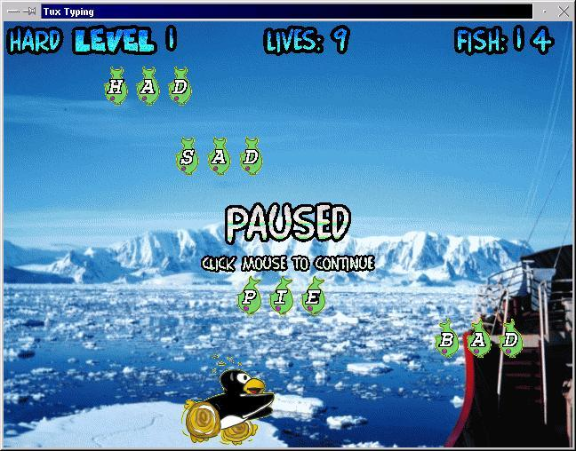

Open Source Projects
A list of open source projects I've either co-created or maintained.
OpenStack ~ cloud computing
It all started when Joshua McKenty called me and asks if I want to help on open data projects at NASA.
We spent over a year trying to cobble together existing open source tools to enable scientists/researchers/engineers/developers. We wanted to enable them to do their awesome science without focusing on all the drudgery of running a continous integration service, online code repostiories, application servers, online datasets, etc.
After some very painful attempts at using existing software, we grabbed some burritos and started developing what would become the compute part of OpenStack.

Andy Smith (termie), Vish Ishaya Abrams, Joshua McKenty, Todd Willey, Devin Carlen and myself worked to build something we could work for our needs at NASA. Soo Choi kept our company and the project moving forward at NASA, including mountains of paperwork and process needed to do "agile" the NASA way.
We switched over to running VMs for data.gov and a collection of NASA projects. Eventually we combined forces with Rackspace's object storage project to create the initial release of OpenStack.
UserScripts.org ~ powerups for your browser
Aaron Boodman created Greasemonkey in 2005. I fell in love. All of a sudden any user could inject code into any webpage they visited. Making the web yours!
Mashups. User Customization. Powerups.
I created this site with Britt Selvitelle to help share and find scripts.
It was based on Ruby on Rails. At its peak it had tens of thousands of scripts, millions of monthly visitors, and an extremely active api.

I really miss this project. I loved working on it. I loved how much power it gave to users. I loved working on all aspects of a website from sys-admin to front-end design. There was a high in going from a forum discussion to improving code to deploying a site serving hundreds of requests per second on a single server to .
I had to shut it down due to the combination of life events, legal threats and increasing sophistication from "baddies" trying to abuse users (scripts running in the browser context could steal cookies or worse.)
Book Burro
Book Burro started as a Greasemonkey extension to help me find books in gradschool. It evolved to extensions for Firefox and Chrome.
Book Burro was a Web 2.0 extension for Firefox. When it sensed you were looking at a page that contains a book, it overlayed a small panel which when opened lists prices at online bookstores such as Amazon, Buy, Half (and many more) and whether the book is available at your library.

It leveraged APIs when possible, but resorted to scraping book stores and libraries. Additionally users could add scraping rules to check their library and share it with the rest of the community.
Colour Spot
This was a simple Mac OS X application which resided in the menu bar and acted like a color dropper for the entire os.
Motivation: a quicker way to grab a color - hold a modifer (shift) and see the hex rgb color in the statusbar. Clicking the color in the statusmenu copies it to the clipboard.
More Interestingness
Jake Dahn, child of the internet and I created an extension for Chrome which would use the Flickr api to grab the "interestingness" feed, and pre-cache (what flickr thinks is) great picture you could see every time you opened a new tab in Chrome.

Wii Me
When the Nintendo Wii were released, they were extremely hard to get. Even months later, sellers including Amazon would run of of stock almost as soon as they got them in.

A few lines of ruby code, querying the amazon e-commerce API (determining if the Wii was in stock), if so, tweeting it out twitter.com/WiiMe ~ archive.org…
I got a Wii. I also helped a few hundred other people get theirs. I was happy to see Ev Williams share his love of it :)
s3://
This is an extension that made Amazon S3 links work in Mozilla Firefox.

You could drag-and-drop to upload. Bookmark. And the url bar would have the s3://bucket/key name in it.
Taboo ~ the cure for tabitis
Taboo was an extension for Firefox that utilied the "save session" code to put tabs to sleep.
When the user clicked "save", it would take a screenshot, save the tab state (similar to how scroll position, etc is saved when you restart your browser), and save the text content of the page.
Then you could search through the saved tabs (including full-text search)

Taboo was created when extensions were given full priviledges in browsers. I was able to reach into lots of internals to add this functionality. Sandboxing of extensions and a real API limit these sort of ideas from being implemented now-a-days.
Tux Typing
Because my focus in college/grad school was topics other than programming, I started contributing to open source. Eventually I found a typing game I started contributing to:

Eventually I was promoted to project lead. I learned a lot about game programming. SDL. Building and shipping on multiple platforms.